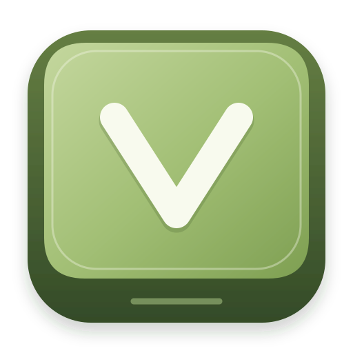

Telex hay VNI, cứ gõ như bạn quen.
Chọn kiểu gõ, bảng mã và phím chuyển Việt / Anh. Điều chỉnh dấu tiếng Việt ngay trong bảng cài đặt.

VietXKeyGÕ THEO CÁCH BẠNBỘ GÕ TIẾNG VIỆT CHO WINDOWS
Tiếng Việt thân thuộc, trong một diện mạo mới.
VietXKey cùng bạn viết, trò chuyện và làm việc mỗi ngày.
Bản portable · Miễn phí · Mã nguồn mở GPLv3
MỘT KHÔNG GIAN GÕ CỦA RIÊNG BẠN
Nền chuyển sắc dịu, chữ dễ đọc và chút xanh rêu.
Chạm nút sáng / tối để chọn không gian của bạn.
Ảnh giao diện thực tế · Chuyển sáng / tối ngay trong ứng dụng
ÍT THAO TÁC HƠN. NHIỀU CẢM HỨNG HƠN.
Những thiết lập cần thiết, ở nơi dễ tìm.
Bạn chọn cách gõ. VietXKey giữ nhịp.
Chọn kiểu gõ, bảng mã và phím chuyển Việt / Anh. Điều chỉnh dấu tiếng Việt ngay trong bảng cài đặt.
Tạo bộ gõ tắt riêng cho tên, câu chào hoặc nội dung bạn thường viết. Mẫu sẵn có: vxk → VietXKey.
Đặt kiểu gõ, bảng mã và tùy chọn gõ tắt riêng. Chọn ứng dụng cần bỏ qua ngay trong danh sách.
Cho phép phụ âm ngoại lai, hoặc bật “Giữ dấu khi viết không chuẩn chính tả” khi cần cách viết tự do hơn. Bạn chủ động chọn trong cài đặt.
BẮT ĐẦU THẬT ĐƠN GIẢN
Bản portable cho Windows x64.
Không cần cài đặt để dùng chế độ gõ thông thường.
Tải file ZIP dành cho Windows x64 ở bên dưới.
Giữ VietXKey.exe và vietxkey_tsf.dll cùng thư mục.
Chọn Telex hoặc VNI. Sau đó mở lại cài đặt bất cứ lúc nào từ biểu tượng ở khay hệ thống.
MỘT VÀI ĐIỀU BẠN CÓ THỂ MUỐN BIẾT
Có. VietXKey là phần mềm mã nguồn mở theo GPLv3. Bạn có thể sử dụng, xem mã nguồn và chia sẻ theo giấy phép đi kèm.
Gói trên trang này dành cho Windows x64. Đây là bản portable ZIP, chưa phải bộ cài MSI. Chưa có bản phát hành cho macOS hoặc Linux.
Thoát VietXKey đang chạy, giải nén gói mới và thay cả EXE lẫn DLL. Nếu Windows báo DLL đang được dùng, đóng ứng dụng đang giữ DLL rồi thay file; sau đó mở lại ứng dụng soạn thảo.
Ứng dụng lưu trong file vietxkey_config.json. Nút “Nền sáng / Nền tối” trong bảng điều khiển sẽ lưu lựa chọn cho lần mở sau. Nút trên website chỉ thay giao diện trang này.
“Đặt dấu tự do” cho phép gõ phím dấu sau phụ âm cuối. “Giữ dấu khi viết không chuẩn chính tả” giữ cách viết có dấu ngoài quy tắc chính tả thông thường khi kết thúc từ; tùy chọn này mặc định tắt. Danh sách giữ từ tiếng Anh tùy chỉnh hiện áp dụng cho chế độ gõ thông thường; chế độ do Windows quản lý dùng bộ quy tắc tiếng Anh có sẵn.
VietXKey được tùy biến từ VietFlow của VietFlow Team, kế thừa thuật toán UniKey của Phạm Kim Long. Minh Tâm Đoàn tùy biến giao diện, sửa lỗi và phát triển thêm chức năng. Lịch sử mã nguồn và giấy phép gốc được giữ trong kho GitHub.
MỘT DIỆN MẠO MỚI. MỘT NHỊP GÕ THÂN QUEN.
VietXKey · Windows x64 · Portable
Tải VietXKey miễn phíXem mã kiểm tra SHA256